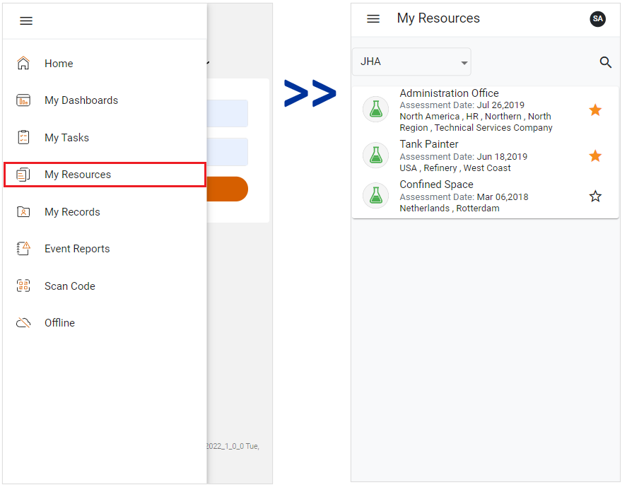

The My Resources module provides an overview of your current job hazard assessments. To access the module, click the side menu and select My Resources. The My Resource view will open.

The My Resources view has two views: JHA and Documents.
The JHA view displays your current job hazard assessments. Job hazard assessments marked as ‘Favorite’ will display at the top of the list. To mark a job hazard assessment as ‘Favorite’, click the star icon on the indictor. To un-mark an assessment as ‘Favorite’, simply click the star icon again.
If you click or tap a job hazard assessment, its corresponding record will open in My Tasks.
The Documents view will display the published documents that have been shared with you. Documents marked as ‘Favorite’ will display at the top of the list. To mark a document as ‘Favorite’, click the star icon on the indictor. To un-mark a document as ‘Favorite’, simply click the star icon again.
If you click or tap a document, a PDF will download to your device.